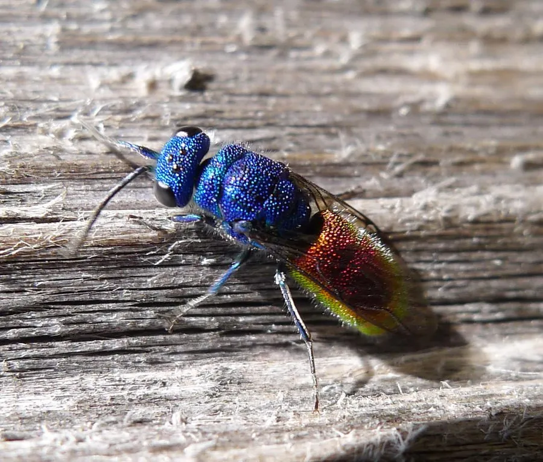

昆虫 · 动物界
杜鹃蜂 Chrysis ignita

体表泛金属蓝绿与紫红光泽的小型寄生蜂，把卵产进泥壶蜂的巢里，幼虫顶替寄主独享猎物，故名杜鹃蜂。
- 分类
- 门节肢动物门纲昆虫纲目膜翅目科青蜂科属青蜂属
- 栖息环境
- 土墙、石缝、竹筒、枯枝等独栖蜂筑巢处
- 地理分布
- 欧洲、北非至亚洲温带，中国北方有分布
- 保护级别
- 常见种，无保护级别；依赖独栖蜂群落
物种志
杜鹃蜂的成虫体长约五至九毫米，体表有强烈的金属光泽，头胸呈蓝绿色，腹部呈紫红或金红色，体表密布粗大的刻点。头部较小，复眼椭圆形，触角短。雌蜂腹部末端有可伸缩的产卵管，能像望远镜一样伸出，把卵精准送进狭窄的巢口，自己却不必钻进巢里。
它分布于欧洲、北非至亚洲温带，中国北方可见，栖息在土墙、石缝、竹筒和枯枝等处，这些地方也是泥壶蜂等独栖蜂的筑巢场所。雌蜂趁寄主外出时把卵产进巢内的猎物堆上，幼虫孵化后先吃掉寄主的卵，再独享堆积的毛虫。它不筑巢、不育幼，把育儿的活全推给别的蜂，因此得名杜鹃蜂，与杜鹃鸟托卵的行为如出一辙。
形态与习性
- 体长约五至九毫米，体表金属光泽
- 体色头胸蓝绿，腹部紫红或金红
- 产卵管可伸缩，能伸入狭窄巢口
- 寄生方式卵产于寄主巢内猎物堆上
- 幼虫先食寄主卵，再独享猎物
- 习性不筑巢不育幼，托卵于他蜂
趣味知识
- 它全身像一块抛光的金属，阳光一照会闪出蓝、绿、红三种颜色。
- 雌蜂的产卵管能像望远镜一样一节节伸出，隔着巢口就把卵送进去。
- 它的幼虫一孵化就先把寄主的卵吃掉，然后慢慢享用堆着的毛虫。